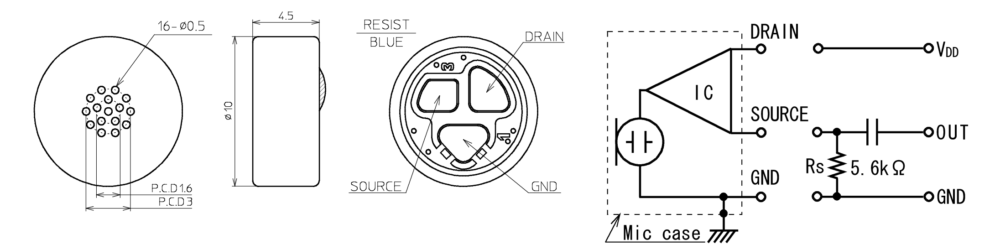
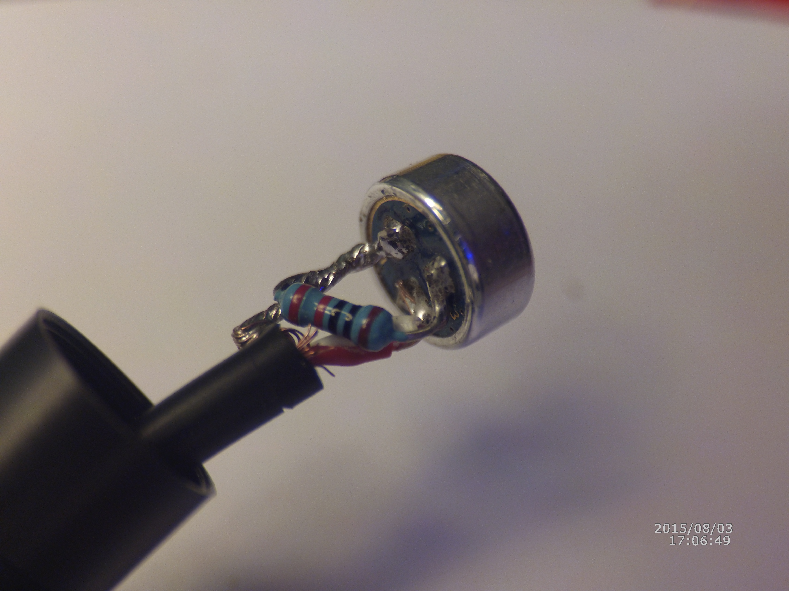
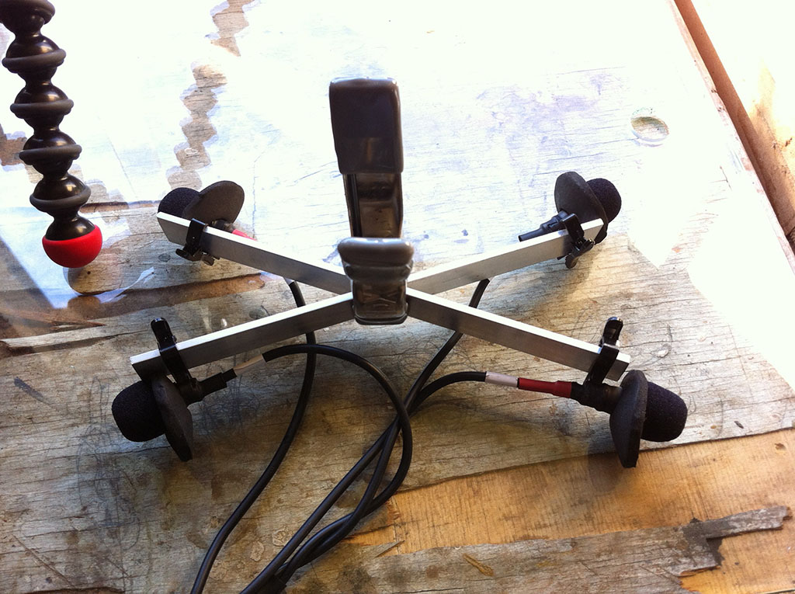
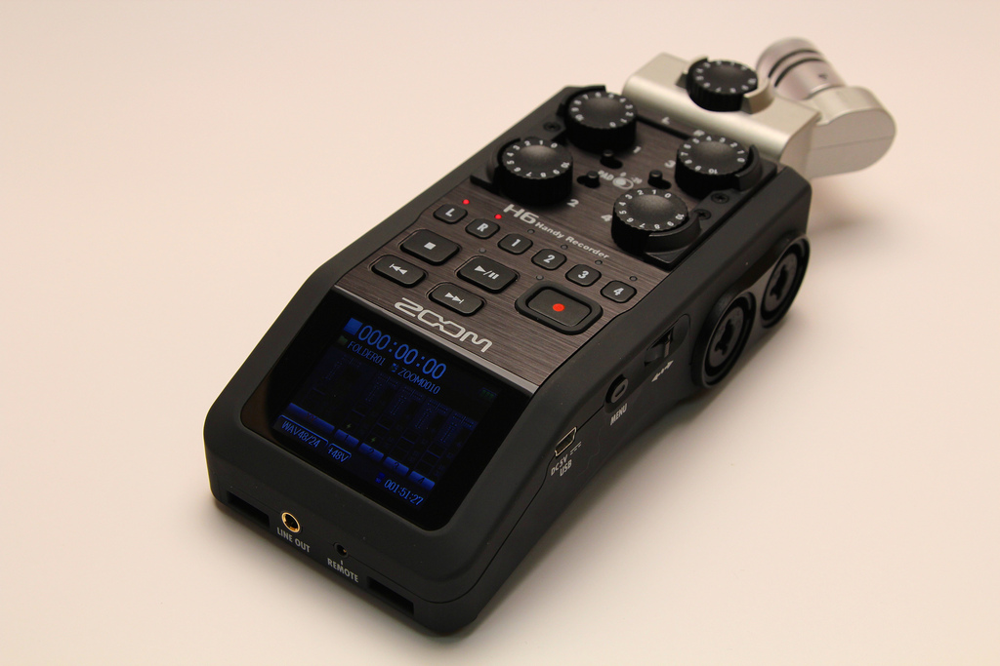
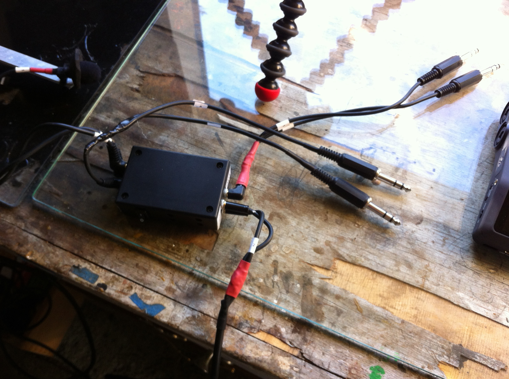
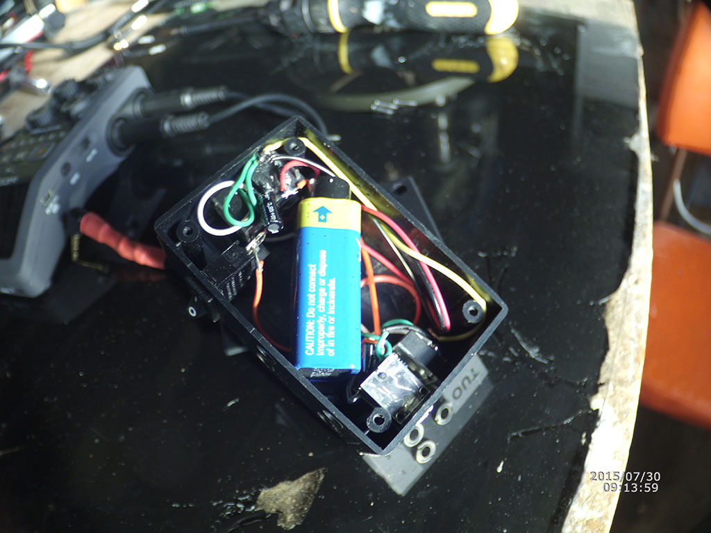
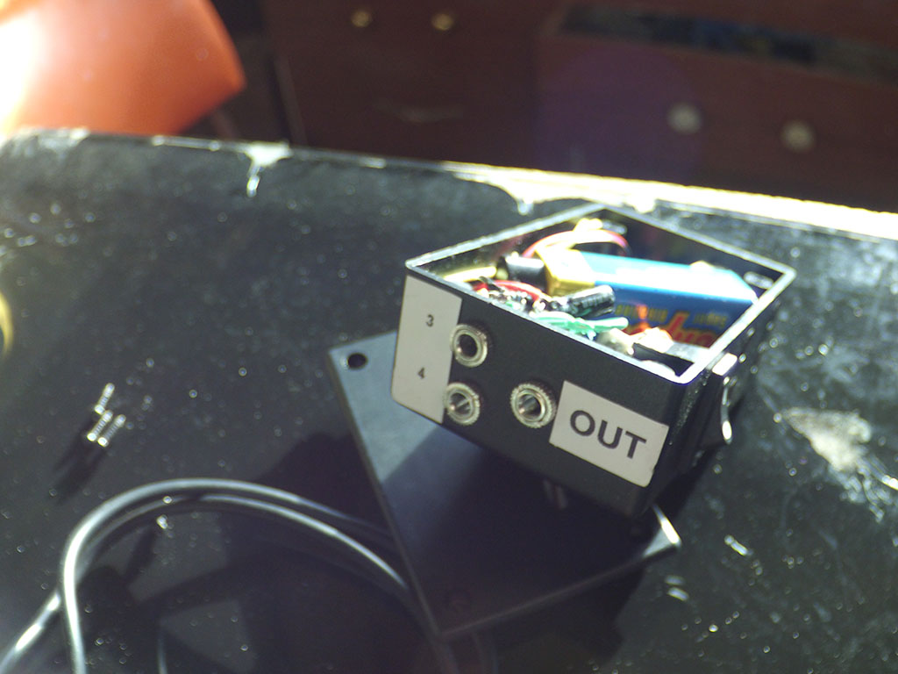
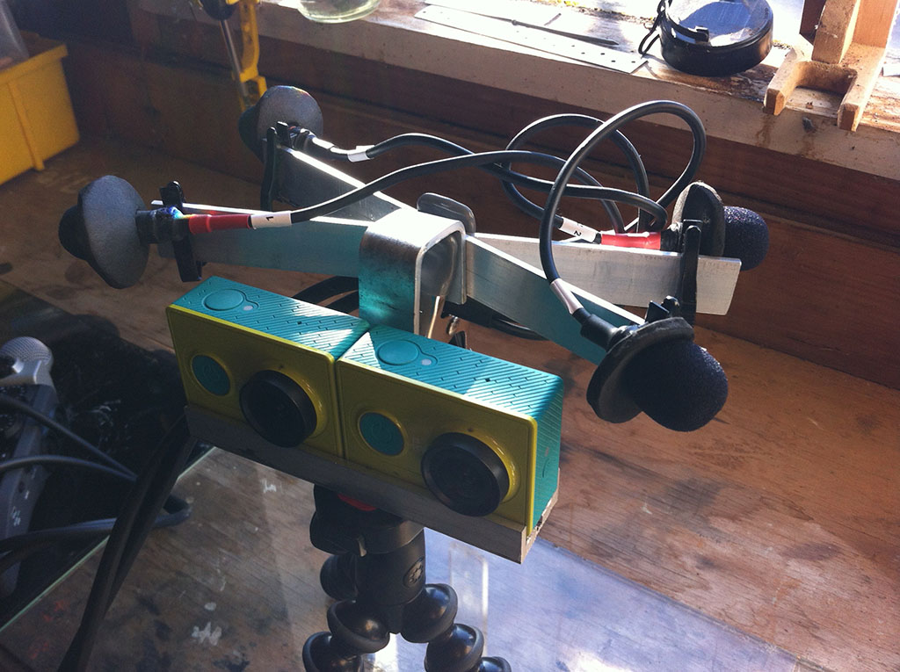

Microphone Array
Sound is a critical component to an immersive experience. The perseption of sound describes space as much as stereovision.
My plan for the sound a is relatively simple, two pairs of binaural microphones. In the viewer, we will pan between the pairs based on the head rotation.
Binaural Microphones
In researching an economical way to build a binaural mic, I found several posts on primo mics, em 172 specifically. Here is one
http://www.zachpoff.com/diy-resources/low-noise-binaural-mics-primo-em172/

http://micbooster.com/primo-microphone-capsules/9-em173.html
I got mine at micbooster.com, and chose the em173, which is the same as the 172, but with three pads, allowing the user to put an alternate resistor between source and ground for alternate sensitivity

I also picked up the little plastic holder, foam windshield and lav clips. I’ve got them clipped to a couple pieces of aluminum bar for now.

Multitrack Recorder - Zoom H6
I needed a multitrack recorder. I chose the Zoom H6. It’s got 6 tracks, phantom power, comes with two microphones, and has positive reviews. It’s not cheap, especially when compared to the cameras. I have justified it by reminding myself how much I’ve always wanted to make field recordings and explore audio.

I have not used it for very long, but so far I really dig it. It’s got a small detailed display that shows levels and a pretty deep menu of options, including the ability to mark takes, label folders, and record a back up with lower levels automatically. I need to set that up, since I’ve already stumbled on clipping. It can also work as a desktop workstation audio interface when connected by usb.
Sync has been an issue for my project and this audio device offers no help in this area. It’s consistent with the cameras in that it’s got no support for timecode or any kind of genlock. It’s unfortunate but I can continue using the ‘clapper’ technique until I come up with something better.
Battery Box

Connecting the mics to the recorder was not that strait forward. The mics require 3-10 volts of power to operate. This is often delivered as what they call ‘plugin power’. The recorder delivers plugin power, but only on two channels. The four channels with mic preamps deliver phantom power. This is not the same. I spent some time trying to determine if I can make use of the phantom power with these mics, but decided my skills and understandings was better suited to making a ‘battery box’, which is a basic circut using a 9v battery to drive the mics.


This took me a few tries, as I’m not particularly skilled with the electronics, reading resistors, soldering and whatnot. I’m pretty sure I’ll revisit this at some point. The battery box is a chunky addition to a chunky recorder. I’d be nicer to have less stuff required

Here is my first test sample, a walk down at the beach with the dogs Pixie and Poppy. Hopefully soon I’ll sync this up with the video and see how the panning works
Here are a couple of links I used to help understand these electret mics
http://www.epanorama.net/circuits/microphone_powering
http://www.jdbsound.com/art/art520.html
http://webpages.charter.net/tidmarsh/binmic/
http://www.youtube.com/watch?v=UhG83WS51q8